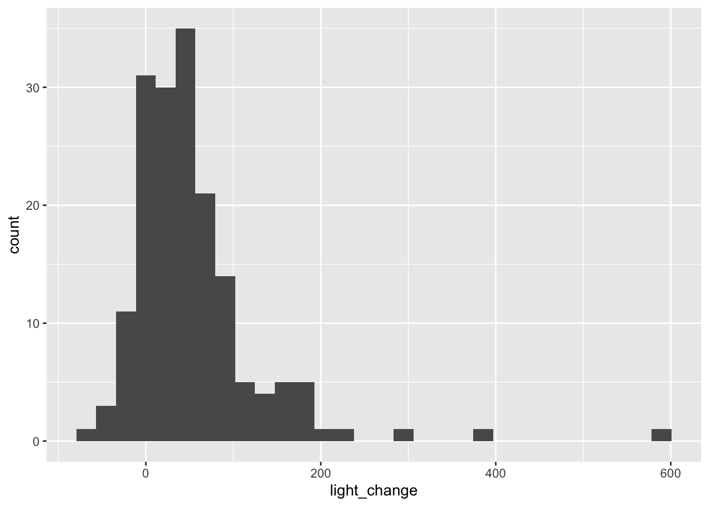
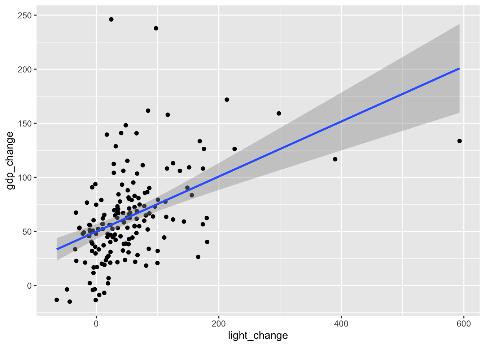

install.packages("tidyverse")Data analysis for social science in tidyverse
このページでは、Llaudet, Elena and Kosuke Imai. 2022. Data Analysis for Social Science: A Friendly and Practical Introduction. Princeton University Press.のコードを現代のRの世界でよく使われているtidyverseパッケージを使ったコードに直すとどのように書くことができるのかを紹介する。これを通じて、tidyverseパッケージに含まれる関数群の初歩的な使い方を学ぶことができるだろう。
コードを実行するためには、tidyverseパッケージをインストールして、読み込む必要がある。パッケージをインストールする際には、次のコマンドを実行する。一度実行してパッケージをインストールしたあとは、再度R/RStudioを開いたとしても、改めて実行する必要はない。
パッケージを使用するためには、R/RStudioを開くたびに、library()コマンドを実行して、パッケージを読み込む必要がある。
library(tidyverse)── Attaching packages ─────────────────────────────────────── tidyverse 1.3.1 ──✓ ggplot2 3.3.5 ✓ purrr 0.3.4
✓ tibble 3.1.6 ✓ dplyr 1.0.7
✓ tidyr 1.1.4 ✓ stringr 1.4.0
✓ readr 2.1.1 ✓ forcats 0.5.1── Conflicts ────────────────────────────────────────── tidyverse_conflicts() ──
x dplyr::filter() masks stats::filter()
x dplyr::lag() masks stats::lag()以下、各Chapterのコードはすべてlibrary(tidyverse)を実行してあるという前提のもとで進める。
Chapter 1 Introduction
1.7 Loading and making sense of data
1.7.2 Loading the dataset
tidyverseでは、read.csv()と同じ機能を果たすコードとしてread_csv()がある。どちらもほぼ同じだが、read_csv()のほうが気持ち読み込みが早いときがある。
star <- read_csv("STAR.csv")1.7.3 Understanding the data
tidyverseではパイプ演算子（%>%）を使って命令を書くことができる。たとえばデータの中身を確認するView()コマンドであれば、次のように書くことができる。
star %>% View()%>%演算子を改行して書いてもよい。
star %>% # starデータフレームに対して、
View() # viewを実行データの上からいくつかの行を見るhead()コマンドであれば、次のように書くことができる：
star %>% # starデータフレームに対して、
head() # headを実行# A tibble: 6 × 4
classtype reading math graduated
<chr> <dbl> <dbl> <dbl>
1 small 578 610 1
2 regular 612 612 1
3 regular 583 606 1
4 small 661 648 1
5 small 614 636 1
6 regular 610 603 0star %>%
head(n = 3)# A tibble: 3 × 4
classtype reading math graduated
<chr> <dbl> <dbl> <dbl>
1 small 578 610 1
2 regular 612 612 1
3 regular 583 606 1ちなみに、MacであればControl + Shift + mで、WindowsであればCtrl + Shift + mでパイプ演算子を出力することができる。
ちなみに、最近RStudioを新しくインストールした場合だと、上記のショートカットキーを入力すると|>というコマンドが出力されるかもしれない。ふつうに使う分だとどちらを使ってもとくに支障は生じない。試しに以下の2種類を実行して、どちらも同じものが出力されることを確かめてみよう。
star |>
head(n = 3)# A tibble: 3 × 4
classtype reading math graduated
<chr> <dbl> <dbl> <dbl>
1 small 578 610 1
2 regular 612 612 1
3 regular 583 606 1star %>%
head(n = 3)# A tibble: 3 × 4
classtype reading math graduated
<chr> <dbl> <dbl> <dbl>
1 small 578 610 1
2 regular 612 612 1
3 regular 583 606 1ちなみに、メニュー（またはEdit）→Preferences…→Codeを選択して、以下の「Use native pipe operator, |> (requires R 4.1+)」のチェックを外すと、上記ショートカットキーを入力したときに%>%が表示されるようになる。
dim(star)についても%>%演算子を使って書くことができる。
star %>% # starデータフレームに対して、
dim() # dimを実行[1] 1274 4ここで挙げた例は単純なので、%>%演算子を使うことのありがたみは感じにくいかもしれない。しかし、コードが長くなってきたり、命令が複雑になってくるほど、%>%演算子を使うメリットは大きくなる。Chapter 3あたりから、徐々にそのメリットが明らかになってくる。
1.8 Computing and interpreting means
1.8.2 Means
平均値のように、データフレームに含まれる何らかの変数（列）に対して計算や集計を行う場合には、with()を使う。たとえばstarデータフレームに含まれる変数列の平均値を計算する方法は次のとおり。
star %>%
with(mean(reading))[1] 628.803star %>%
with(mean(graduated))[1] 0.8697017もう一つ別の方法として、summarize()を使う方法がある。たとえばreadingの平均値を求めたいときは次のように書く。
star %>%
summarize(mean(reading))# A tibble: 1 × 1
`mean(reading)`
<dbl>
1 629.summarize()の便利なところは、一度に複数の変数を集計した値を出すことができる点だ。たとえば上記のようにreadingとgraduatedの平均値を計算したい場合には、次のように書けばよい。
star %>%
summarize(mean(reading),
mean(graduated))# A tibble: 1 × 2
`mean(reading)` `mean(graduated)`
<dbl> <dbl>
1 629. 0.870Chapter 2 Randomized experiments
2.5 Do small classes improve student performance?
read_csv()を使ってデータの読み込み。
star <- read_csv("STAR.csv")2.5.2 Creating new variables
tidyverseを使ってなにか新しい変数を作るときのコマンドが、mutate()である。mutate(新しい変数の名前 = その内容)、というコードを書く。
教科書と同じように、starデータフレームに含まれているclasstype列が"small"の場合に1、そうでない場合に0をとる新しい列smallを作って、starデータフレームに追加したい場合には、次のように書く。
star <- star %>%
mutate(small = ifelse(classtype == "small", 1, 0))また、tidyverseを使う場合には、ifelse()と同じような関数としてif_else()がある。文法はほぼ同じで、次のように書くことができる。
star <- star %>%
mutate(small = if_else(classtype == "small", 1, 0))ifelse()を使った場合と結果が同じになっているかを確認しよう。
star %>%
head()# A tibble: 6 × 5
classtype reading math graduated small
<chr> <dbl> <dbl> <dbl> <dbl>
1 small 578 610 1 1
2 regular 612 612 1 0
3 regular 583 606 1 0
4 small 661 648 1 1
5 small 614 636 1 1
6 regular 610 603 0 02.5.3 Subsetting variables
グループごとに集計をしたい場合には、summarize()などの前にgroup_by()をつけることで、グループ別に集計することができる。
star %>% # starデータフレームを、
group_by(small) %>% # smallの値別に分けて、
summarize(mean(reading)) # 平均値を求める# A tibble: 2 × 2
small `mean(reading)`
<dbl> <dbl>
1 0 625.
2 1 633.複数の変数を集計するときにも同様だ。
star %>%
group_by(small) %>%
summarize(mean(reading),
mean(math),
mean(graduated))# A tibble: 2 × 4
small `mean(reading)` `mean(math)` `mean(graduated)`
<dbl> <dbl> <dbl> <dbl>
1 0 625. 629. 0.866
2 1 633. 635. 0.874これ以降は作業途中です（2023/04/28現在）
Chapter 3 Inferring population characteristics via survey research
3.3 Measuring support for Brexit
read_csv()を使ってデータの読み込み。
bes <- read_csv("BES.csv")bes %>% head()# A tibble: 6 × 4
vote leave education age
<chr> <dbl> <dbl> <dbl>
1 leave 1 3 60
2 leave 1 NA 56
3 stay 0 5 73
4 leave 1 4 64
5 don't know NA 2 68
6 stay 0 4 85bes %>% dim()[1] 30895 43.3.2 Frequency tables
度数分布表（Frequency table）を作るときには、with(table())を使う。
bes %>%
with(table(vote))vote
don't know leave stay won't vote
2314 13692 14352 537 3.3.3 Tables of proportions
一度tableにfreq_tableと名前をつけて、prop.table()を使って割合を求めることができる。
freq_table <- bes %>%
with(table(vote))
freq_table %>%
prop.table()vote
don't know leave stay won't vote
0.07489885 0.44317851 0.46454119 0.01738145 もしくは、そのまま%>%演算子を重ねることでも割合を求めることができる。
bes %>%
with(table(vote)) %>%
prop.table()vote
don't know leave stay won't vote
0.07489885 0.44317851 0.46454119 0.01738145 3.4 Who supported brexit?
3.4.1 Handling missing data
NAを含めた度数分布を出す場合には、exclude = NULLのオプションのほか、useNA = "always"のオプションを使うこともできる。
bes %>%
with(table(education, exclude = NULL))education
1 2 3 4 5 <NA>
2045 5781 6272 10676 2696 3425 bes %>%
with(table(education, useNA = "always"))education
1 2 3 4 5 <NA>
2045 5781 6272 10676 2696 3425 平均値を求める。
bes %>%
with(mean(leave))[1] NAbes %>%
with(mean(leave, na.rm = TRUE))[1] 0.4882328一つでも欠損値があるデータを除外する場合には、na.omit()を使う。
bes1 <- bes %>%
na.omit()ただし、61ページの「ADVANCED TIP」にあるように、実際の調査データの分析では分析に使う変数はごく一部のため、一部の変数のみ抜き出したデータを準備したうえで、na.omit()で欠損値のあるデータを除外することが多い。一部の変数のみを取り出す場合には、select()というコマンドが使える。
bes1 <- bes %>%
select(vote, leave, education, age) %>%
na.omit()3.4.2 Two-way frequency tables
with(table())は2変量の度数分布表（クロス集計表）の作成にも使える。
bes1 %>%
with(table(leave, education)) education
leave 1 2 3 4 5
0 498 1763 3014 6081 1898
1 1356 3388 2685 3783 6313.4.3 Two-way tables of proportions
総%を求める場合
bes1 %>%
with(table(leave, education)) %>%
prop.table() education
leave 1 2 3 4 5
0 0.01984301 0.07024744 0.12009404 0.24229988 0.07562657
1 0.05403036 0.13499621 0.10698490 0.15073515 0.02514245行%を求める場合
bes1 %>%
with(table(leave, education)) %>%
prop.table(margin = 1) education
leave 1 2 3 4 5
0 0.03757356 0.13301645 0.22740305 0.45880489 0.14320205
1 0.11449802 0.28607616 0.22671620 0.31942920 0.05328042列%を求める場合
bes1 %>%
with(table(leave, education)) %>%
prop.table(margin = 2) education
leave 1 2 3 4 5
0 0.2686084 0.3422636 0.5288647 0.6164842 0.7504943
1 0.7313916 0.6577364 0.4711353 0.3835158 0.24950573.4.4 Histograms
bes1 %>%
ggplot(aes(x = age)) +
geom_histogram()`stat_bin()` using `bins = 30`. Pick better value with `binwidth`.
bes1 %>%
ggplot(aes(x = age)) +
geom_histogram() +
facet_wrap(~leave)`stat_bin()` using `bins = 30`. Pick better value with `binwidth`.
3.4.5 Density histograms
bes1 %>%
filter(education == 1 | education == 4) %>%
ggplot(aes(x = age)) +
geom_histogram() +
facet_wrap(~education)`stat_bin()` using `bins = 30`. Pick better value with `binwidth`.bes1 %>%
filter(education == 1 | education == 4) %>%
ggplot(aes(x = age)) +
geom_histogram(aes(y = after_stat(density))) +
facet_wrap(~education)`stat_bin()` using `bins = 30`. Pick better value with `binwidth`.
bes1 %>%
ggplot(aes(x = age)) +
geom_histogram(aes(y = after_stat(density))) +
facet_wrap(~leave)`stat_bin()` using `bins = 30`. Pick better value with `binwidth`.3.4.6 Descriptive statistics
bes1 %>%
group_by(leave) %>%
summarize(mean = mean(age))# A tibble: 2 × 2
leave mean
<dbl> <dbl>
1 0 46.9
2 1 55.1bes1 %>%
group_by(leave) %>%
summarize(median = median(age))# A tibble: 2 × 2
leave median
<dbl> <dbl>
1 0 48
2 1 58bes1 %>%
group_by(leave) %>%
summarize(sd = sd(age))# A tibble: 2 × 2
leave sd
<dbl> <dbl>
1 0 17.3
2 1 15.0bes1 %>%
filter(leave == 1) %>%
summarize(var = var(age),
sd_sq = sd(age)^2,
var_sqrt = sqrt(var(age)))# A tibble: 1 × 3
var sd_sq var_sqrt
<dbl> <dbl> <dbl>
1 224. 224. 15.03.5 Relationship between education and the leave vote in the entire UK
dis <- read_csv("UK_districts.csv")dis %>% head()# A tibble: 6 × 3
name leave high_education
<chr> <dbl> <dbl>
1 Birmingham 50.4 23.0
2 Cardiff 40.0 32.3
3 Edinburgh City 25.6 21.9
4 Glasgow City 33.4 25.9
5 Liverpool 41.8 22.4
6 Swansea 51.5 25.8dis %>% dim()[1] 382 3dis1 <- dis %>%
na.omit()dis1 %>% dim()[1] 380 33.5.1 Scatter plots
dis1 %>%
ggplot(aes(x = high_education, y = leave)) +
geom_point()
xvalue <- dis1 %>%
with(mean(high_education))
yvalue <- dis1 %>%
with(mean(leave))
dis1 %>%
ggplot(aes(x = high_education, y = leave)) +
geom_point() +
geom_hline(yintercept = yvalue, lty = "dashed") +
geom_vline(xintercept = xvalue, lty = "dashed")
3.5.2 Scatter plots
dis1 %>%
with(cor(high_education, leave))[1] -0.7633185dis1 %>%
with(cor(leave, high_education))[1] -0.7633185Chapter 4 Predicting outcomes using linear regression
4.4 Predicting GDP using prior GDP
co <- read_csv("countries.csv")co %>% head()# A tibble: 6 × 5
country gdp prior_gdp light prior_light
<chr> <dbl> <dbl> <dbl> <dbl>
1 USA 11.1 7.37 4.23 4.48
2 Japan 543. 464. 11.9 11.8
3 Germany 2.15 1.79 10.6 9.70
4 China 16.6 4.90 1.45 0.735
5 UK 1.10 0.754 11.9 13.4
6 France 1.58 1.21 8.51 6.91 co %>% dim()[1] 170 54.4.1 Relationship between GDP and prior GDP
co %>%
ggplot(aes(x = prior_gdp, y = gdp)) +
geom_point()
co %>%
with(cor(gdp, prior_gdp))[1] 0.9903451co %>%
ggplot(aes(x = prior_gdp, y = gdp)) +
geom_point() +
geom_smooth(method = "lm", se = FALSE)`geom_smooth()` using formula 'y ~ x'
4.4.2 With natural logarithm transformations
co <- co %>%
mutate(log_gdp = log(gdp)) %>%
mutate(log_prior_gdp = log(prior_gdp))co %>%
ggplot(aes(x = gdp)) +
geom_histogram()`stat_bin()` using `bins = 30`. Pick better value with `binwidth`.
co %>%
ggplot(aes(x = log_gdp)) +
geom_histogram()`stat_bin()` using `bins = 30`. Pick better value with `binwidth`.
co %>%
ggplot(aes(x = prior_gdp)) +
geom_histogram()`stat_bin()` using `bins = 30`. Pick better value with `binwidth`.
co %>%
ggplot(aes(x = log_prior_gdp)) +
geom_histogram()`stat_bin()` using `bins = 30`. Pick better value with `binwidth`.
co %>%
ggplot(aes(x = log_prior_gdp, y = log_gdp)) +
geom_point()
co %>%
with(cor(log_gdp, log_prior_gdp))[1] 0.99826964.5 Predicting GDP growth using night-time light emissions
co <- co %>%
mutate(gdp_change = (gdp - prior_gdp)/prior_gdp * 100) %>%
mutate(light_change = (light - prior_light)/prior_light * 100)co %>%
ggplot(aes(x = gdp_change)) +
geom_histogram()`stat_bin()` using `bins = 30`. Pick better value with `binwidth`.
co %>%
ggplot(aes(x = light_change)) +
geom_histogram()`stat_bin()` using `bins = 30`. Pick better value with `binwidth`.co %>%
ggplot(aes(x = light_change, y = gdp_change)) +
geom_point()
co %>%
with(cor(gdp_change, light_change))[1] 0.45776724.6 Measuring how well the model fits the data with coefficient of determination, R^2
co %>%
with(cor(gdp, prior_gdp)^2)[1] 0.9807834co %>%
with(cor(log_gdp, log_prior_gdp)^2)[1] 0.9965422co %>%
with(cor(gdp_change, light_change)^2)[1] 0.2095508Chapter 5 Estimating causal effects with observational data
5.3 The effect of Russian TV on Ukrainians’ voting behavior
uas <- read_csv("UA_survey.csv")uas %>% head()# A tibble: 6 × 3
russian_tv pro_russian_vote within_25km
<dbl> <dbl> <dbl>
1 1 0 1
2 1 1 1
3 0 0 0
4 0 0 1
5 0 0 1
6 1 0 0uas %>% dim()[1] 358 35.3.1 Using the simple linear model to compute the difference-in-means estimator
mean0 <- uas %>%
filter(russian_tv == 0) %>%
with(mean(pro_russian_vote))
mean1 <- uas %>%
filter(russian_tv == 1) %>%
with(mean(pro_russian_vote))
mean1 - mean0[1] 0.1191139別解：
uas %>%
group_by(russian_tv) %>%
summarize(mean = mean(pro_russian_vote)) %>%
mutate(diff = mean - lag(mean))# A tibble: 2 × 3
russian_tv mean diff
<dbl> <dbl> <dbl>
1 0 0.171 NA
2 1 0.29 0.1195.3.2 Controlling for confounders using a multiple linear regression model
uas %>%
with(cor(within_25km, russian_tv))[1] 0.8127747uas %>%
with(table(within_25km, russian_tv)) russian_tv
within_25km 0 1
0 139 14
1 19 1865.4 The effect of russian TV on Ukrainian electoral outcomes
uap <- read_csv("UA_precincts.csv")uap %>% head()# A tibble: 6 × 4
russian_tv pro_russian prior_pro_russian within_25km
<dbl> <dbl> <dbl> <dbl>
1 0 2.72 25.1 1
2 0 0.893 35.3 0
3 1 1.69 20.5 1
4 0 72.3 84.5 1
5 0 1.28 29.0 0
6 1 1.43 45.6 0uap %>% dim()[1] 3589 45.4.1 Using the simple linear model to compute the difference-in-means estimator
uap <- uap %>%
mutate(pro_russian_change = pro_russian - prior_pro_russian)uap %>%
ggplot(aes(x = pro_russian_change)) +
geom_histogram()`stat_bin()` using `bins = 30`. Pick better value with `binwidth`.uap %>%
with(cor(within_25km, russian_tv))[1] 0.5317845